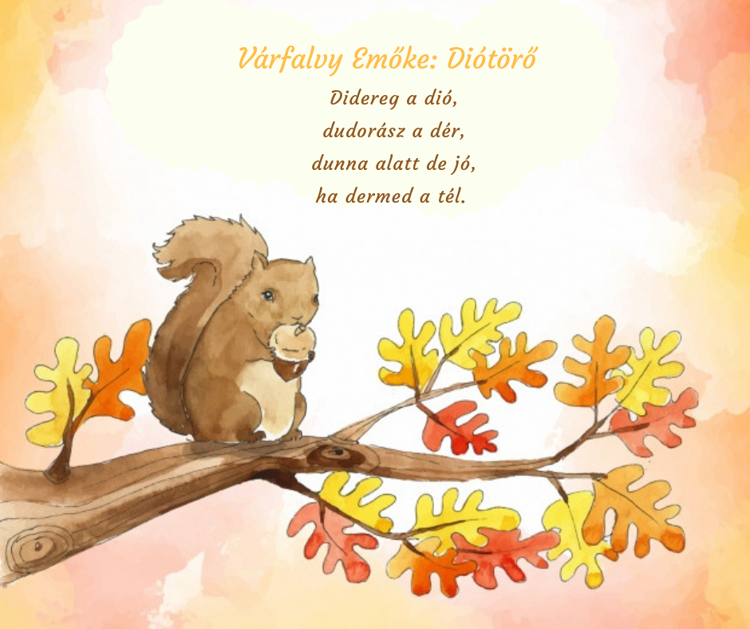

Mondóka
- Egy – megérett a meggy,
- kettő – csipkebokor vessző,
- három – te vagy az én párom,
- négy – megcsípett a légy,
- öt – érik a tök,
- hat – hasad a pad,
- hét – zsemlét süt a pék,
- nyolc – üres a polc,
- kilenc – kis Ferenc,
- tíz – tiszta víz.
- Ha nem tiszta,
- vidd vissza,
- a kis cica megissza.